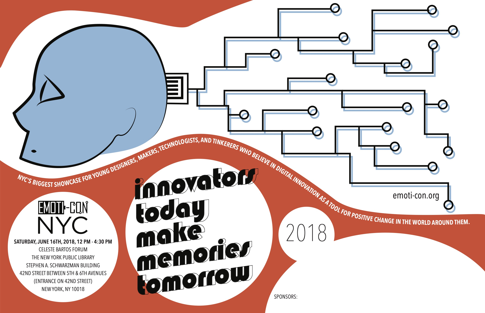

Emoti-Con is an annual project fair and competition hosted in New York City for teens to showcase their work in digital media and technology. I worked on the design of the 2018 conference's promotional materials, such as the design guidelines that were applied to the entire conference (color palettes, fonts, mottos), as well as the design of merchandise, awards, and posters. Made with Adobe Photoshop and Illustrator.